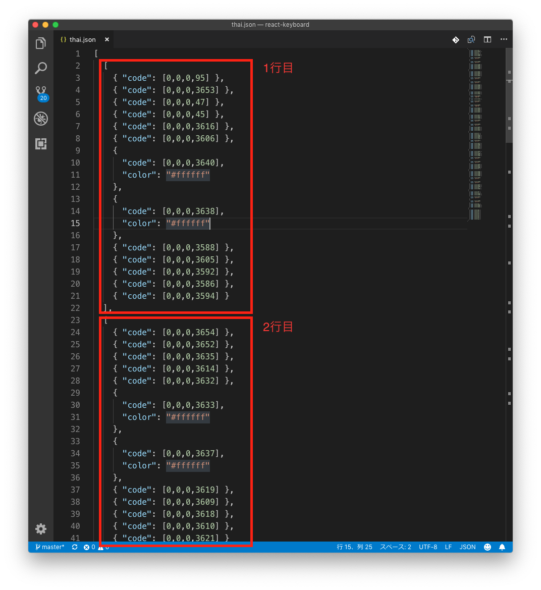

対応言語の追加方法#
WebKeyboardのキーボード定義を作成することで、対応言語を追加することが可能です。
キーボードの1ボタンがひとつの文字に該当するような言語であればここに記載の手順で追加できます。
文字入力に特殊な法則性があるような言語についてはここに記載の手順で追加することはできません。
追加できない言語の例
日本語のローマ字入力や韓国語の初声・中声・終声のような、複数のキーからひとつの文字が構成される場合
キーボード定義について#
input-clue¥react-keyboard¥public¥keycode にキーボード配列を定義したファイルが格納されています。このファイルを更新することでキーボードの表示を修正することができます。
ファイル名は半角英数字であれば特に規定はありませんが、言語名を指定するのが分かりやすくて良いと思います。
キーボード定義の追加#
以下の手順でキーボード定義を追加することができます。
タガログ語を追加する手順を例にして解説します。
1. キーボード定義ファイルの追加#
input-clue¥react-keyboard¥public¥keycode にキーボード配列を定義したファイルを追加します。
ファイル名は分かりやすいように tagalog.json とします。
ファイルは2次元配列になっています。 
ふたつめの [ から ] の間が1行になります。
{ } がキーの定義です。 code に配列で文字コードを10進数で定義します。
文字コードの値については Unicode Consortium の表 (Code Charts) を確認ください。
タガログ語は こちら です。
color を定義することでボタンの背景色を指定できます。#000000 から #ffffff の間の任意のカラーコードを指定できます。
2. 追加フォントの配置#
該当言語の表示に追加のフォントが必要な場合、 input-clue¥react-keyboard¥src¥font フォルダに配置します。
input-clue¥react-keyboard¥src¥index.css を修正し、追加フォントを読み込むよう指定します。
5行目〜7行目の src を修正します。
例えば new-font.ttf というファイルを追加する場合、以下のように指定してください。
@font-face { font-family: -apple-system, BlinkMacSystemFont, "Segoe UI", "Roboto", "Oxygen", "Ubuntu", "Cantarell", "Fira Sans", "Droid Sans", "Helvetica Neue", sans-serif; src: url('./font/estre.ttf') format('truetype'), url('./font/DejaVuSans.ttf') format('truetype'), url('./font/DejaVuSans.eot'), /* 末尾の ; を , に修正 */ url('./font/new-font.ttf'); /* <- この行を追加 */ }
3. WebKeyboardにキーボード定義を登録する#
input-clue¥react-keyboard¥src¥commons¥index.js にキーボード定義を登録します。
7行目からのキーボードの言語定義に項目を追加します。
今回は末尾に追加します。
Tips
WebKeyboardのコンボボックスにはlanguagesに定義した順番で表示されます
/** * キーボードの言語定義 */ export const languages = { // タイ語 thai: { dictionary: 'PdicThai-JP-092U.xlsx', // 辞書ファイル keycode: 'thai.json', // 文字コード定義ファイル }, /* ~~~ 途中省略 ~~~~ */ // フランス語＆IPA french_pho: { keycode: 'french_pho.json', }, // vvv ここから追加 vvv // タガログ語 tagalog: { keycode: 'tagalog.json', }, // ^^^ ここまで追加 ^^^ };
フォント指定がある場合は合わせて fontFamily を指定してください。
また、右から左に書く言語の場合はここで direction: 'rtl' (rtl: right to left) を指定します。
4. 翻訳ファイルの更新#
input-clue¥react-keyboard¥src¥commons¥locales の翻訳ファイルを更新し、タガログ語を追加します。
ja.json を以下のように更新します。
{ "app_name": "WebKeyboard", "languages": { "tagalog": "タガログ語", "thai": "タイ語", "korean": "韓国語",
locales フォルダにある各言語の翻訳ファイルについて、同じようにタガログ語を追加します。
5. 動作確認#
次のコマンドを実行するとブラウザが起動し、WebKeyboardが表示されます。
> npm start
左上のコンボボックスから追加したタガログ語を選択し、意図した通りに表示されているか確認します。
動作確認が終わったらブラウザを終了し、コマンドプロンプトで Ctrl+C を押してください。プログラムが終了します。
6. ビルド & アップロード#
以下のコマンドでビルドを行い、変更内容を反映します。
> npm run build
生成された build フォルダをWebサーバーにアップロードしてください。